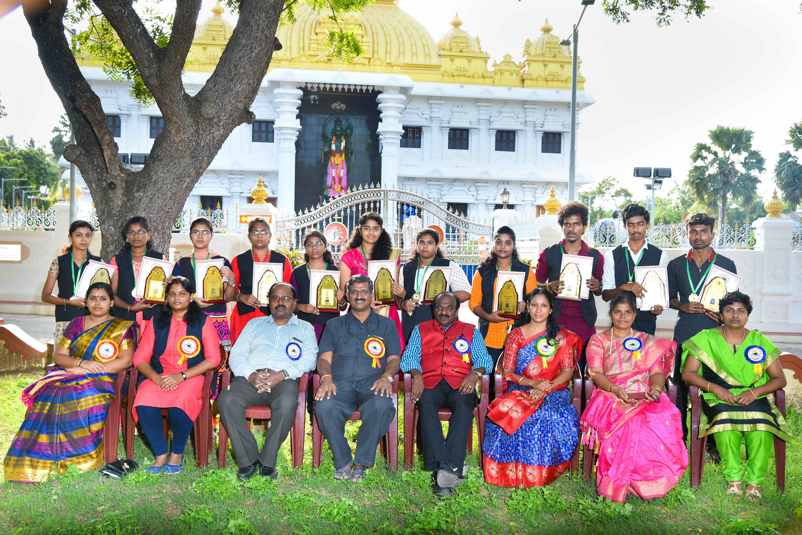
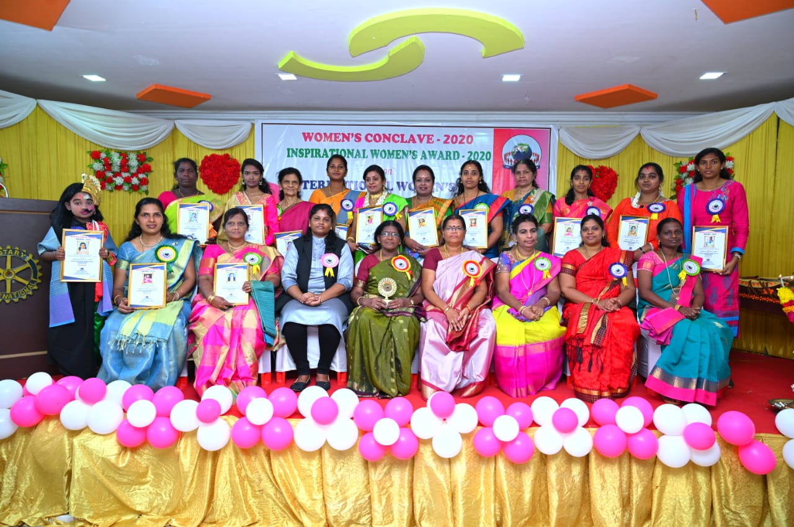

– is the Trust, Registered under Indian Trust Act, 1882, it is organized to serve the community with the wordings of Swami Vivekananda “Not Me – But You”, which reflects the essence of Democratic living and upholds the need for selfless service. The organization strongly believes that “All Power, Attitude & Strength of the human beings is within themselves” it is the duty of the stakeholders viz., (Parents, Teachers, Trainers etc.,) to bring it out or show the way to identify those skills. Our organization focuses on students/teaching community and to identify their skills as well make them responsible towards themselves, their career, family and ultimately to the Nation. Students community, the budding young generations are the most important and dynamic segments of the population of any developing country which focuses on the young people’s education and empowerment could see the tremendous growth undoubtedly they are the tomorrows innovators, creators and Leaders. They require support in terms of identifying their hidden talents & Skills to transform the future. The desirous of Establishment of a Trust is for
Research and Development
Development & Training
Female health & Awareness
Education & Child Development and
Women Empowerment